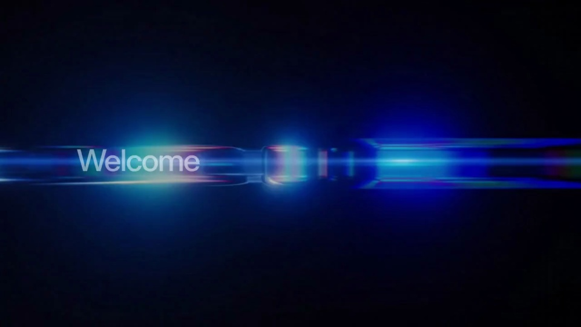
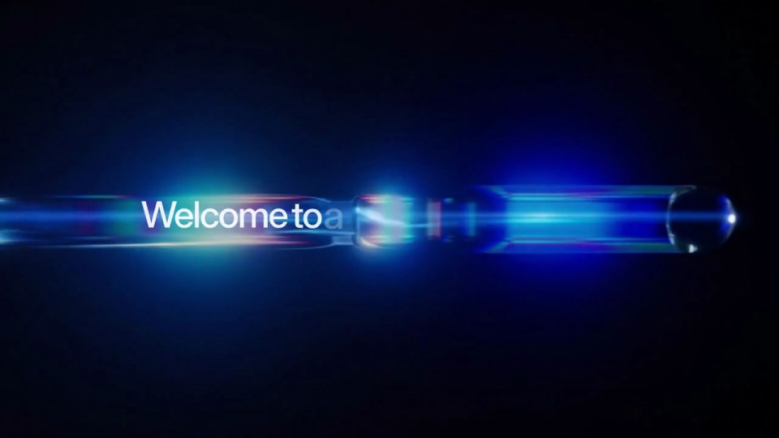
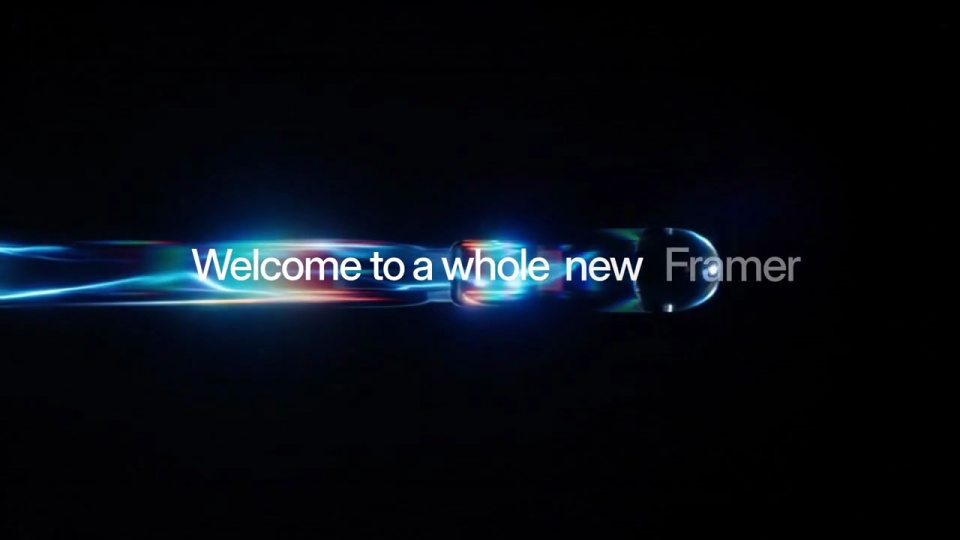
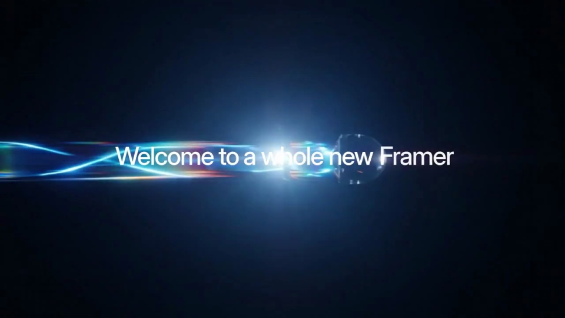
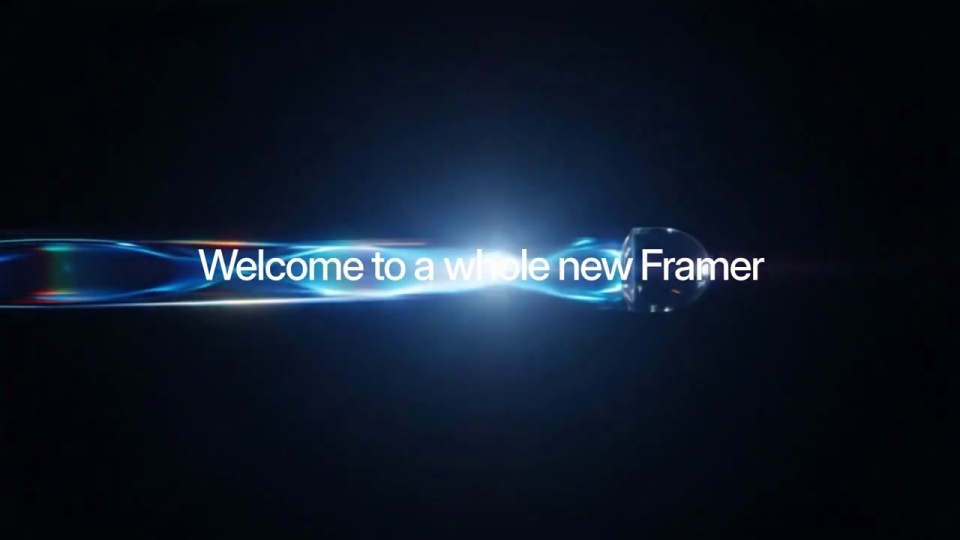

Framer / V338
玻璃棱镜上的 Framer
标题固定在画面中轴，按词逐步出现；狭长玻璃条从左向右延伸，最亮的光点稍后越过标题。
构图与编排 可播放 · 可替换内容
整体编排规则示例
查看 HTML 源码
<!doctype html><html lang="zh-CN"><meta charset="utf-8"><meta name="viewport" content="width=device-width,initial-scale=1"><title>玻璃棱镜上的 Framer · sequence</title><style>html,body{margin:0;width:100%;height:100%;overflow:hidden;background:#010714}canvas{display:block;width:100%;height:100%;object-fit:contain}</style><body data-mode="sequence"><canvas width="1000" height="600"></canvas><script src="data.js"></script><script src="common.js"></script><script src="scene.js"></script><script src="bridge.js"></script></body></html>画面元素水平玻璃条逐词标题移动高光
MOTION LANGUAGE
动作与构图
局部动作 · 构图规则
01
让高光带出一句话
让高光带出一句话规则示例
查看 HTML 源码
<!doctype html><html lang="zh-CN"><meta charset="utf-8"><meta name="viewport" content="width=device-width,initial-scale=1"><title>玻璃棱镜上的 Framer · sequence</title><style>html,body{margin:0;width:100%;height:100%;overflow:hidden;background:#010714}canvas{display:block;width:100%;height:100%;object-fit:contain}</style><body data-mode="clip" data-start="0" data-end="3.3"><canvas width="1000" height="600"></canvas><script src="data.js"></script><script src="common.js"></script><script src="scene.js"></script><script src="bridge.js"></script></body></html>标题固定在画面中轴，按词逐步出现；狭长玻璃条从左向右延伸，最亮的光点稍后越过标题。
02
高度克制，横向张力充足
玻璃条只占很窄的高度，黑底留白远大于主体。蓝色为主，青色和彩虹折边只作细线；文字不要随光带扭曲。
03
替换成一条发布短句
保留由左到右的阅读方向和最后的整句停留。中文可按短语分组出现，避免逐字挤满高光区域。
SEQUENCE
段落与节奏
点击段落，定位到上方编排示意。





画面参考 · 离散静帧
KEEP THE RELATIONSHIPS
制作其他主题
- 更换发布短句和强调色，保留横向光带与逐词显现。
制作约束
水平玻璃条 / 逐词标题 / 移动高光
- 标题固定在画面中轴，按词逐步出现；狭长玻璃条从左向右延伸，最亮的光点稍后越过标题。
- 玻璃条只占很窄的高度，黑底留白远大于主体。蓝色为主，青色和彩虹折边只作细线；文字不要随光带扭曲。
- 保留由左到右的阅读方向和最后的整句停留。中文可按短语分组出现，避免逐字挤满高光区域。